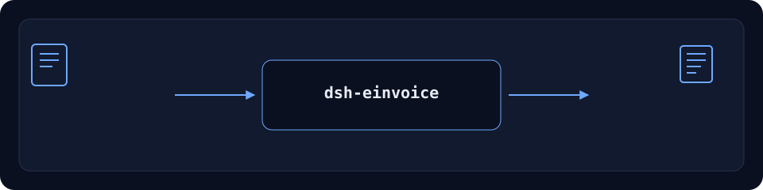

dsh-einvoice


File-level Chinese e-invoice (OFD/XML) ingest, parse, dedup and local archive.
Status: alpha / public-synthetic / partial / not counted / not GA. No customer evidence, customer data, or production-readiness claim.
English · 简体中文 · Español · Português · हिन्दी
dsh plugin --profile <profile> add dsh-einvoice

Workflow: local input → plugin → local output. No model call is required.
Install
Install and verify:
dsh plugin --profile <profile> add dsh-einvoice
dsh --profile <profile> --dump-config | grep dsh-einvoice
Uninstall:
dsh plugin --profile <profile> remove dsh-einvoice
What it does
File-level Chinese e-invoice (OFD/XML) ingest, parse, dedup and local archive. Runs locally on DeepSeek Harness. The table below is the exact tool surface; the examples use the real command surface.
Input and output stay local; nothing is uploaded.
Tools
Tool names and descriptions are kept in English to match the runtime output.
| Tool | Purpose | Risk |
|---|---|---|
invoice.ingest |
Ingest one local OFD/XML, compute SHA-256, store the original, idempotent by bytes | R1 local write |
invoice.parse |
Parse old OFD Attachs/original_invoice.xml or 数电票 Tags/CustomTag.xml; return eight fields, lines, evidence and unknown fields |
R0 |
invoice.query |
Query the local pool by entity, period, lifecycle or text | R0 |
invoice.dedup |
Group duplicates by invoice number or seller + date + total | R0 |
invoice.review_queue |
Queue parsed invoices for manual local review; optional buyer-tax-id mismatch flags | R1 local write |
invoice.record_receipt |
Hash a local receipt, append it and move lifecycle; verification_source=local_receipt, tax_verified=false |
R1 local write |
invoice.redlink |
Bind a negative red invoice to its blue invoice and store deltas | R1 local write |
invoice.archive |
Build a manifest + originals + receipts ZIP under the local archive directory | R1 local write |
invoice.check |
Verify manifest/member hashes, missing files and traversal | R0 |
invoice.restore |
Restore a verified archive into the local restore root | R1 local write |
Quick start
dsh plugin --profile <profile> add dsh-einvoice
dsh --profile <profile> --dump-config | grep dsh-einvoice
Limits
- Public/synthetic only; no customer data or customer evidence.
- Alpha/partial, not counted, no GA or production-readiness claim.
- No model or network call unless a tool explicitly says so.
- The exact per-tool boundaries are in the table and
ACCEPTANCE.csv.
Public sample
Public/synthetic fixtures live in test/fixtures/; ACCEPTANCE.csv records the public checks with counted=false.
Development
pnpm install --frozen-lockfile
pnpm build && pnpm lint && pnpm typecheck && pnpm test
Family
DSH domain plugin family (15 packages + 2 suites)
License
Apache-2.0. See LICENSE, NOTICE, THIRD-PARTY-NOTICES.